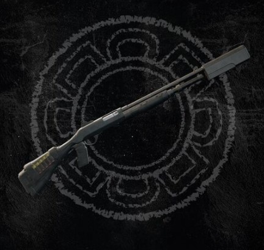
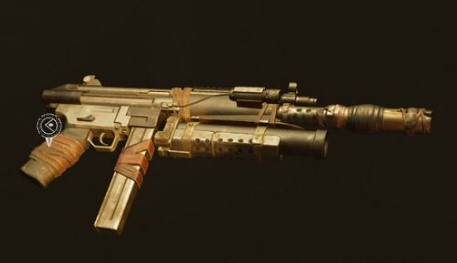
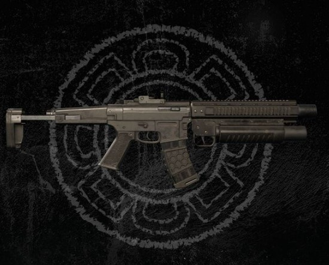
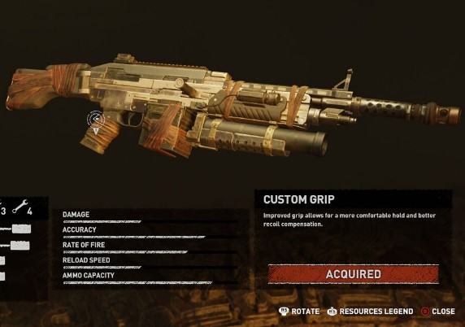

I modelli disponibili in gioco sono vari:
C&T S55 (variante CZ-75 9x19mm),
Desert Eagle Mark XIX, H&K USP Match,
Silent Sting (variante Luger Po8, 9x19mm),
AB .45 (variante M1911),
J&D Model 27 (variante Smith & Wesson Model 19).

SHOTGUNS
I modelli disponibili in gioco sono vari:
Sedgwick 707 (variante 12-Gauge Double Barrelled Shotgun),
Whispering Scourge (variante Benelli M3 Super 90),
WHWS-16 (variante Deawoo USAS-12),
TAEV 16 (variante Franchi SPAS-12),
Bishop 600 (variante Mossberg 500AT 9).

SUBMACHINE GUNS
I modelli disponibili in gioco sono vari:
WASP 11 (variante Heckler & Koch MP5A3),
NEP-14 (variante Ingram MAC-10),

ASSAULT/BATTLE RIFLES
I modelli disponibili in gioco sono vari:
Umbrage 3-80 (variante AAC Honey Badger),
Vicar Mark II (variante FN FNC),
GF RAL (variante FN FAL),
FN SCAR-L CQC,
Heckler & Koch G36KV.

MACHINE GUNS
Un solo modello disponibile:
PN-TF-267 (variante FN M249).